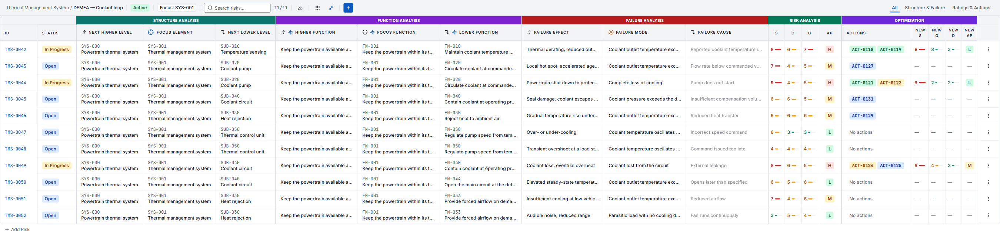
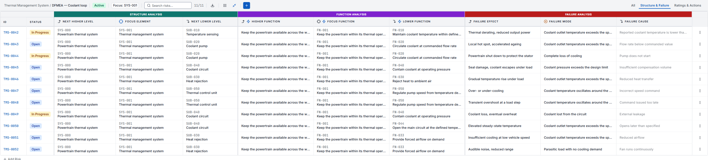
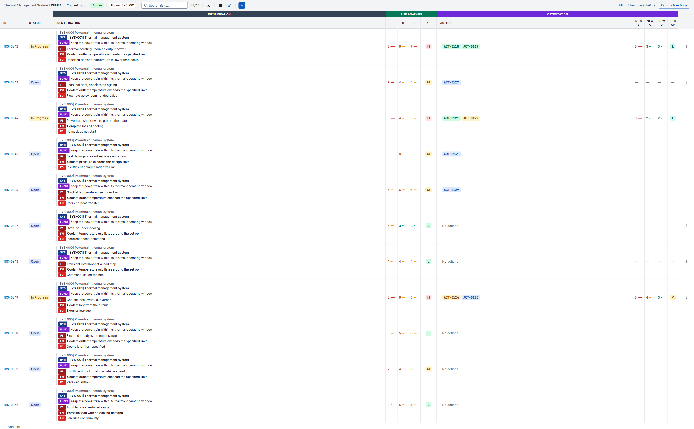
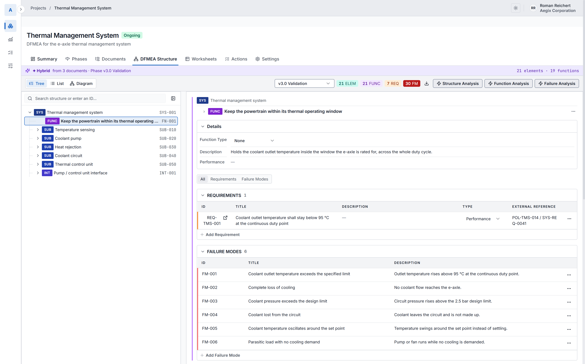
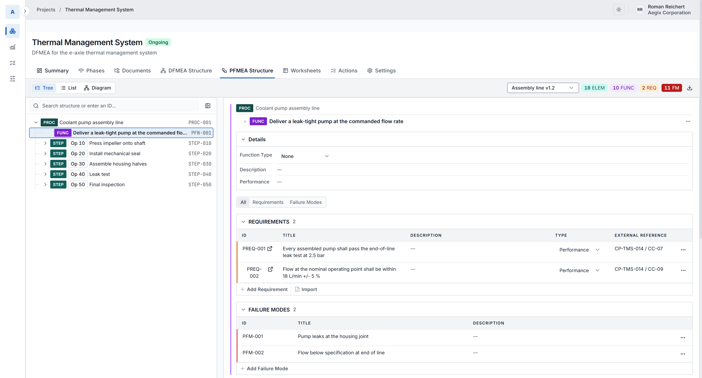
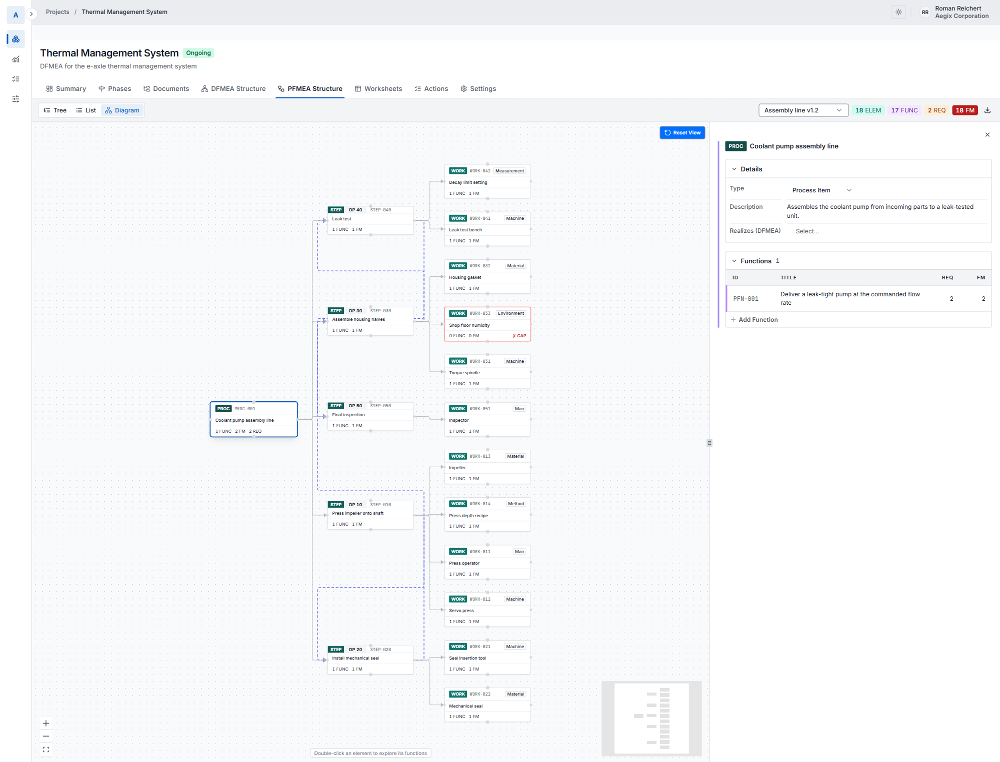
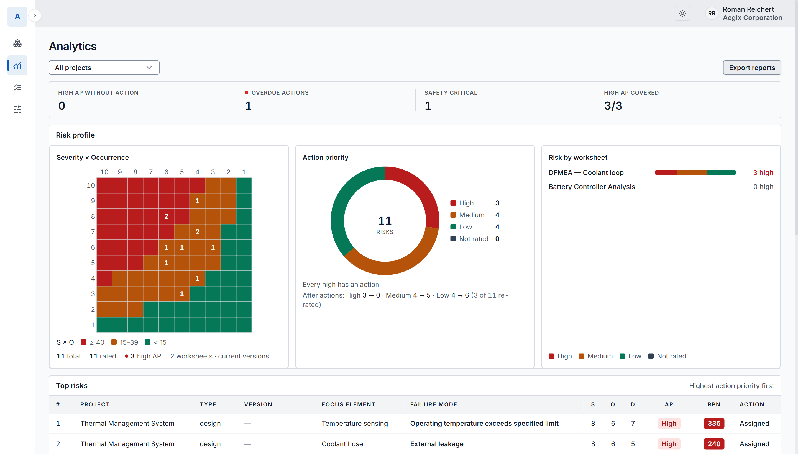
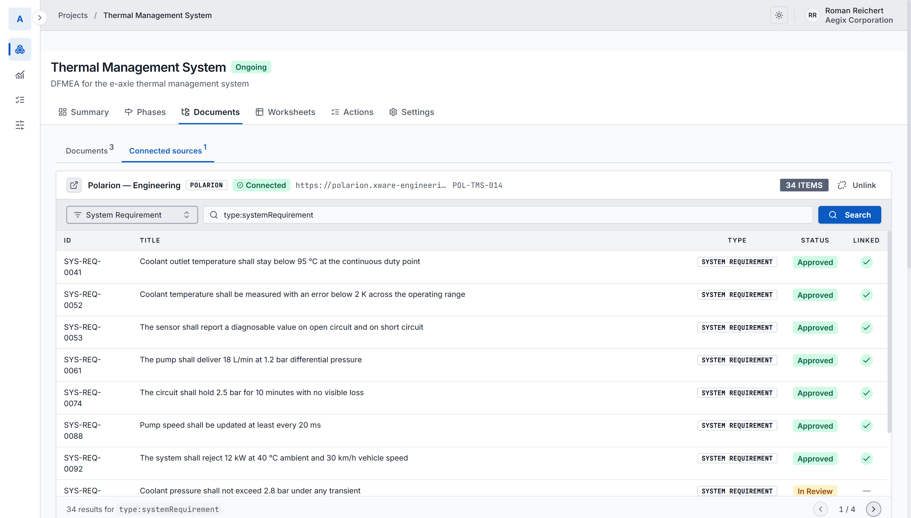

Engineering intelligence for FMEA
Aegix uses AI to turn requirements, specifications, existing FMEAs and engineering knowledge into structured, traceable risk analysis.
Less time building the FMEA. More time thinking about the risk.



The information needed for an FMEA already exists — spread across system specifications, requirements, architecture documents, design descriptions, previous FMEAs, test documentation and ALM systems. Engineers then spend hours finding it, interpreting it and transferring it into another structure.
The analysis opens with its structure already drafted from your documents.
Human-in-the-loop
Aegix is built to amplify engineering judgement. AI can identify relevant information, propose relationships, suggest potential failure modes and surface areas that may deserve attention. Engineers review, challenge, modify and approve the analysis.
Every suggestion waits for an engineer to accept it.
Traceability
An FMEA is a chain of engineering reasoning. Aegix keeps the links between its steps, so a failure mode still points back at the requirement it threatens and forward to the verification that covers it.
The FMEA becomes part of the engineering lifecycle.
How it works
Aegix combines AI with a structured engineering model.
Extract relevant engineering information from requirements, specifications, documents and existing analyses.
Turn unstructured information into engineering concepts and relationships — functions, failure modes, causes, effects, controls, actions.
Assist engineers in identifying potential failure modes, relationships and gaps in the analysis.
Connect risk analysis back to its engineering sources, and forward to mitigation, implementation and verification.

The system, its subsystems, and the requirement and failure modes on the selected function.

The same screen for a process FMEA: process item, process steps by operation number, and the control plan characteristics the line has to hold.

The same process structure drawn as a diagram. Each step fans out to its work elements, tagged man, machine, material, method, environment or measurement. The one outlined in red has no function and no failure mode against it yet.
Seeing the whole programme
Action Priority distribution, High AP coverage, overdue actions and the risk profile — per worksheet, per project, or across the programme, with the analysis one click away from the number.

Action priority across every worksheet, with high-AP coverage and overdue actions.
Technology
AI processes requirements, specifications, FMEAs and engineering documentation to identify relevant concepts and relationships.
Information becomes a connected model that can support FMEA and risk analysis, rather than remaining unstructured text.
AI operates inside engineering context, generating suggestions and relationships for engineers to review.
Suggestions stay connected to the engineering information they came from.
Engineers remain responsible for reviewing and approving the resulting analysis.
Aegix runs in our cloud, or on your own infrastructure if your engineering data cannot leave it.
Integrations
Aegix reads requirements from Polarion and writes back to it, and takes the rest as files: specifications, existing FMEAs, drawings and control plans in; Excel worksheets, PDF reports and action lists out.
Requirements arrive carrying their Polarion id, and keep it.

Browsing the linked Polarion project. A tick marks the requirements already pulled into the analysis.
Method
Aegix covers design FMEA (DFMEA) and process FMEA (PFMEA) on the AIAG & VDA method, which it ships with as a ready starting point. Your engineering team still controls functions, failure modes, effects, causes, controls, risk evaluation, actions, responsibilities, reviews and approval.
Templates are configurable, so a team that uses different terminology, different rating scales or a different worksheet layout can set that up once and work the way it already works.
Modern AI assistance. Established engineering discipline.
Knowledge reuse
Every FMEA contains engineering knowledge that took experienced engineers time to create — and it usually stays trapped in previous projects, spreadsheets, documents and individual teams.
Your previous engineering work becomes an asset for the next project.
The difference
| Traditional FMEA | With Aegix |
|---|---|
| Search through documents | Extract relevant engineering information |
| Start from a blank table | Start from existing engineering knowledge |
| Manually transfer information | AI-assisted structuring |
| Discover gaps during reviews | Surface potential gaps earlier |
| FMEA isolated from engineering | Connected to requirements and ALM |
| Knowledge stays in projects | Knowledge becomes reusable |
The time it gives back goes into thinking about the risk.
Who it's for
For organisations developing complex and safety-critical products.
Functional safety, electrification, software-intensive systems and complex E/E architectures.
System complexity, safety requirements and long engineering lifecycles.
High-consequence systems where traceability and engineering judgement matter.
Structured risk analysis connected to product and verification information.
Complex products where engineering knowledge spans multiple disciplines and tools.
Where it fits
Connect FMEA with the broader safety engineering process.
Work with functions, architectures, interfaces and dependencies.
Maintain relationships between requirements and risk analysis.
Connect mitigations and controls with verification evidence.
Bring FMEA closer to the systems where development happens.
Accountability
Engineering AI should not simply give you an answer. It should give you something you can examine.
AI accelerates the work. Engineers remain accountable for the result.
FMEA is only the beginning. The same engineering intelligence can eventually be applied continuously across the product lifecycle.
From analysing risk periodically, to continuously understanding how engineering changes affect risk.
Who builds it
Aegix is developed by XWARE, an engineering company focused on complex software and cyber-physical systems. Our work spans functional safety, cybersecurity, systems engineering, requirements and ALM, verification and validation, and AI-assisted engineering.
Aegix comes out of the engineering work XWARE already does.
Give us a specification, a requirements set or an existing FMEA. We'll show you how Aegix extracts the engineering knowledge, structures the analysis and helps your team identify what deserves attention.